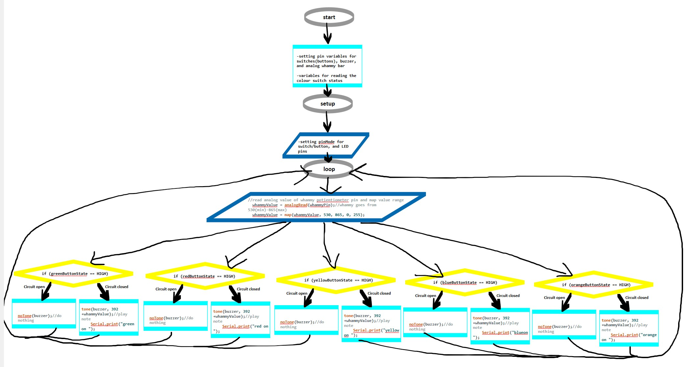
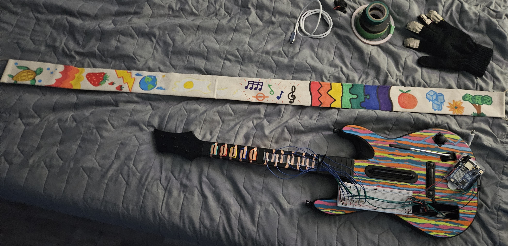
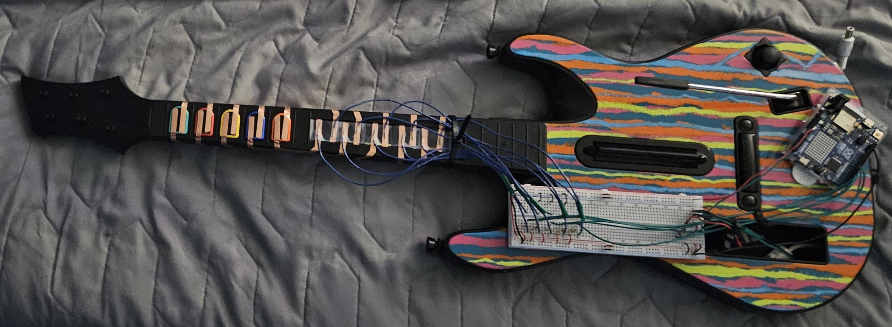
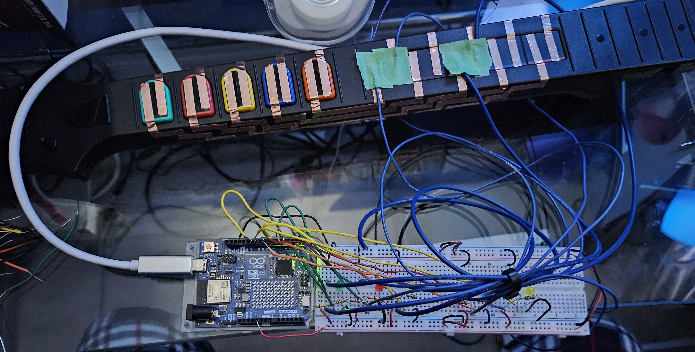
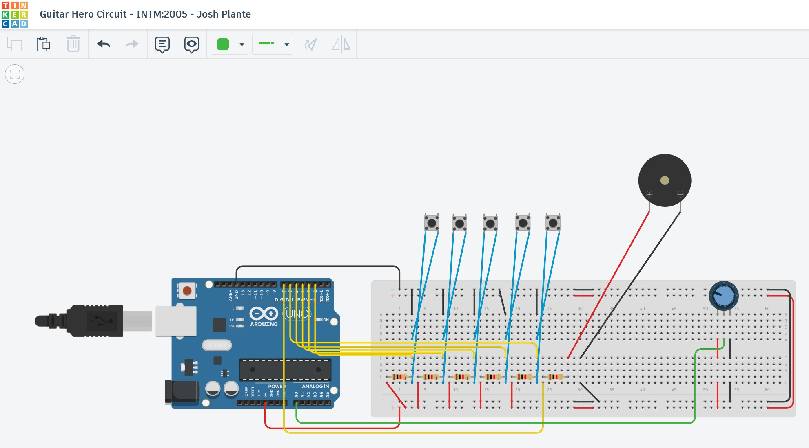
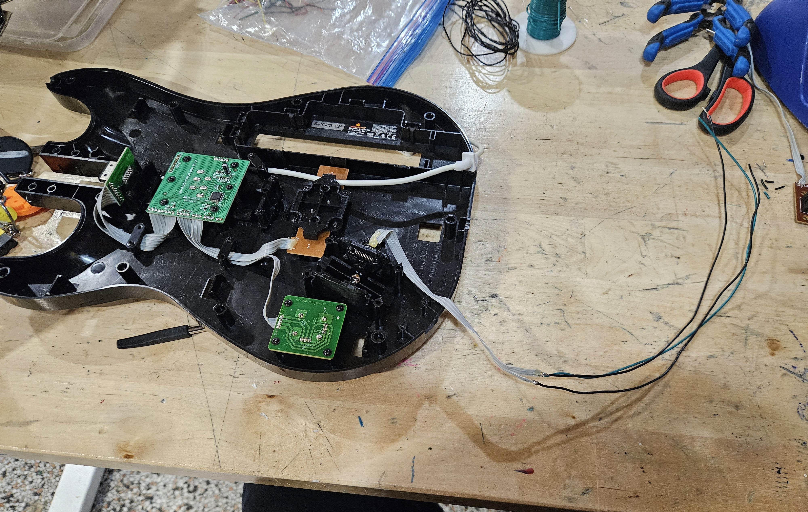

Project Summary
The Wiitar Mod was created as a piece for my physical computing class. I had worked with the Red Octane Guitar Hero controllers for previous projects, (see CloneZero) so this was a natural extension for me. By researching and taking apart the controller, I attempted to hack it into something like a kids toy that plays music; think the Cat Piano, or something like it.
I created manual switches using copper wire, which were taped lower in the guitar's neck, then wired to the on-board arduino; the manual switches are activated using a custom sewn glove with conductive fabric. The guitar's Whammy Bar was desoldered, and rewired through the guitar into the arduino as well. Lastly a piezo-electric speaker was wired to the arduino as well, and nested into the empty Wiimote socket. I used command strips to mount the arduino and breadboard onto the face of the guitar. To power the mod, I hid a 9V battery inside the guitar, and wired the connection to the arduino by replacing the Wiimote connector wire with my power supply wire. See photos at the bottom of the page.
Unfortunately, the piezo-electric speaker proved to be an insufficent method for the complex sound I wanted to get from the guitars many controls. I would love to update this project in the future.
Project Videos
Wiitar Mod Circut Demo Video
A demonstration of the Wiitar Mod's circuit and physical layout.
Wiitar Mod Supplimentary Video
A demonstration of the Wiitar Mod's whammy bar working with an LED.
Wiitar Mod Glove Demonstration Video
A demonstation of how the neck buttons were modified with copper tape into switches. It also shows how the conductive fabric glove is used to activate the switches; which in this early prototype, are wired to LEDs in my breadboard.
Images
Click on any image to view it fullscreen in a new tab.






